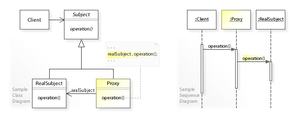
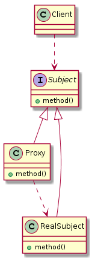
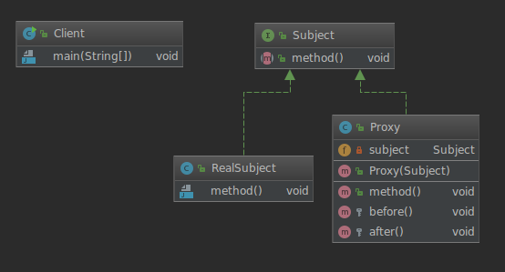
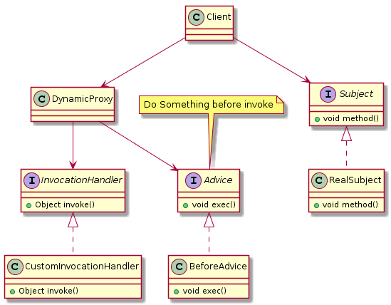
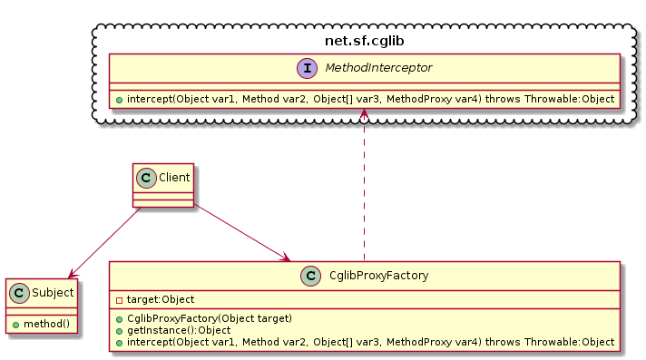

【Design Patterns】代理模式
代理模式
定义: 代理是一个包装器或代理对象，客户端正在调用它来访问幕后的真实服务对象。使用代理可以简单地转发到真实对象，或者可以提供额外的逻辑。
wiki:https://en.wikipedia.org/wiki/Proxy_pattern
类型: 结构型模式

UML类图

代理模式实例
静态代理
结构如下:

抽象主题角色(公共接口)
具体主题角色(真正的处理对象)
|
|
代理主题角色(代理类)
客户端(业务类)
动态代理
例如面向横切面编程-AOP(Aspect Oriented Programming)中就运用了动态代理机制.
JDK实现
UML
|
|

真正执行的主题
|
|
消息通知
|
|
实现JDK的InvocationHandler
|
|
动态代理类
|
|
场景类
|
|
CGLIB实现
UML
|
|

主题类
|
|
代理工厂类
|
|
场景类
|
|
几种代理的对比
静态代理： 由程序员或特定工具自动生成的源代码，再对其编译，在程序运行之前，代理的类编译生成的.class文件就已经存在了
动态代理: 在程序运行时，通过反射机制动态创建而成。
| 代理方式 | 具体实现 | 优点 | 缺点 | 底层 |
|---|---|---|---|---|
| 静态代理 | 代理类与委托类实现同一接口 在代理类中需要硬编码接口 |
实现简单 容易理解 |
代理类需要硬编码接口 在实际应用中可能会导致重复编码 浪费存储空间并且效率很低 |
|
| JDK动态代理 | 代理类与委托类实现同一接口 主要是通过代理类实现 InvocationHandler并重写invoke方法来进行动态代理在invoke方法中将对方法进行增强处理 |
不需要硬编码接口 代码复用率高 |
只能够代理实现了接口的委托类 | 用反射机制进行方法的调用 |
| CGLIB动态代理 | 代理类将委托类作为自己的父类并为其中的非final委托方法创建两个方法一个是与委托方法签名相同的方法，它在方法中会通过super调用委托方法 另一个是代理类独有的方法 在代理方法中，它会判断是否存在实现了 MethodInterceptor接口的对象，若存在则将调用intercept方法对委托方法进行代理 |
可以在运行时对类或者是接口进行增强操作 委托类无需实现接口 |
不能对final类以及final方法进行代理 |
底层将方法全部存入一个数组中, 通过数组索引直接进行方法调用 |